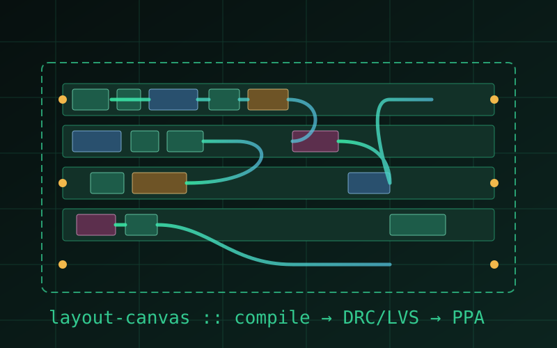
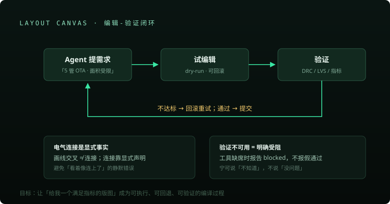

Layout Compiler
Agent 原生的版图编译工作台
Agent 说「给我一个 5 管 OTA，面积 < 4000µm²」，系统迭代产出 DRC/LVS 干净、PPA 达标的 GDS。事务化编辑引擎 + 显式连接性 + fail-closed 验证。


方向与价值
版图是模拟芯片自动化最难的一段：AI 生成电路很快，但从电路到可制造版图仍然要靠人。这个工作台探索的是 Agent 真正动手做版图时需要的工程底座——每次修改可回滚、验证不通过绝不报假通过。
设计原则：电气连接是显式事实而不是视觉巧合；验证工具不可用时明确报告受阻，绝不输出虚假的「已通过」。